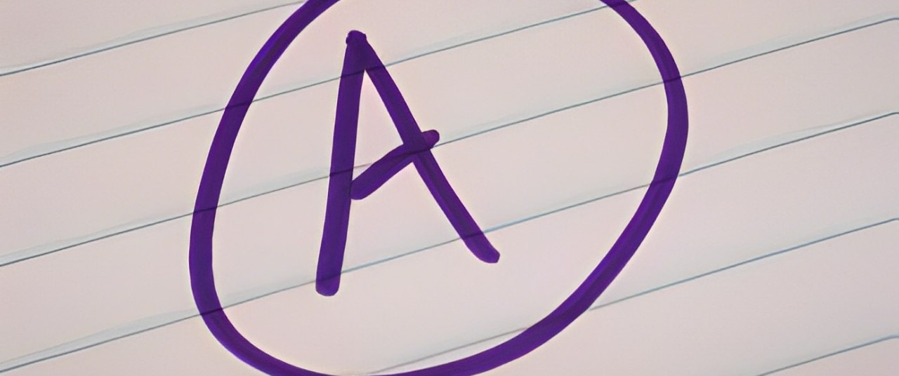

List of Certificates, Awards and Honors
Leadership and Community Involvement
- Pal Members (2023/2024)
- Gotong Royong Madani (2023)
- Chairman for Persatuan Puteri Islam Malaysia (2023)
- Joined Georgian Charity Run National Level (2019)
Competitions and Extracurricular Activities
- Bronze award for ‘Ikatan dan Simpulan’ in matriculation Jamboree National Level (2024)
- Prolang Challenge (2024)
- Silver award for Matrix Extra Quiz – MexQ (2023/2024)
- Gold award for KMJ Innovation Day State Level (2023)
- Computer Science Challenge KMNS (2023/2024)
- Lantern Competition KMNS (2023)
- E-Program Semarak Patriotik KMNS (2023)
- Viper Challenge Physics Unit (2023)
- Math Fiesta (2023)
- Champion for Foot Marching Competition School Level (2022)
- Foot Marching Competition District Level (2018)
- 2nd place for Foot Marching Competition School Level (2018)
- 3rd place for Ramadan Videography Competition (2020)
- Champion of Poster drawing and Khat Competition (2020)
- 7th place for Poster Drawing Competition- Independence Day (2020)
- 3rd place in FROG VLE Championship (2019)
Academic Excellence
- Director's Certificate of Commendation Award for GPA 4.0- First Semester (2023/2024)
- 5-Star Nilam Program (2022)
- Champion of English Online Quiz School Level (2021)
Special Recognition
- Best in Arabic Language - Form 5 (2023)
- Best in Pendidikan Alquran dan Al-Sunnah- Form 5 (2023)
- Best in Pendidikan Syariah Islamiah- Form 5 (2023)
- Excellence Leap Award for English Subject (2023)
- Dedicated student of Arabic language online learning- PDPR (2021)
- Best in Arabic Language - Form 1 (2018)